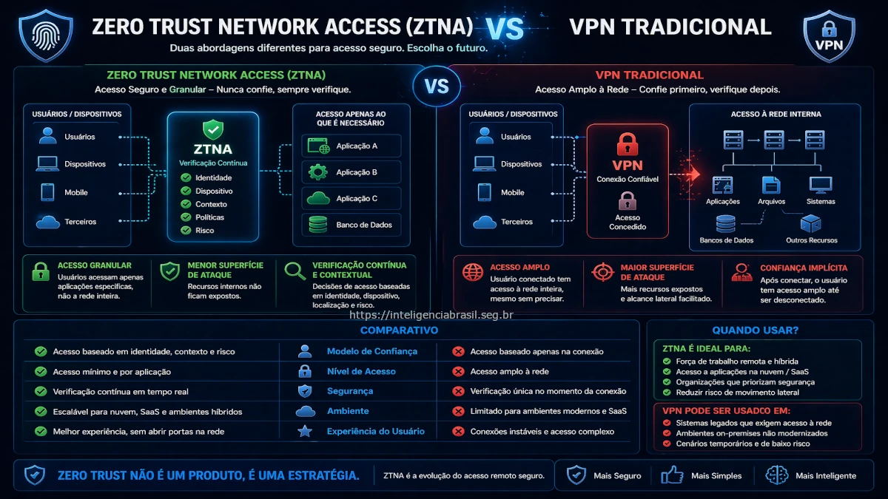

Neste artigo
Na era digital, a seguranca da informacao e um desafio constante para as organizacoes. A transicao de VPNs tradicionais para Zero Trust Network Access (ZTNA) representa uma mudanca significativa na abordagem de seguranca, priorizando a verificacao continua sobre a confianca presumida.
Arquitetura ZTNA vs VPN
As VPNs tradicionais funcionam criando um "tunel" seguro entre o usuario e a rede corporativa, permitindo acesso total aos recursos internos. Este modelo, embora eficaz em muitos aspectos, apresenta riscos significativos, pois uma vez dentro, o usuario tem acesso irrestrito.
Por outro lado, o ZTNA adota uma abordagem de "confie, mas verifique", onde cada solicitacao de acesso e tratada como potencialmente maliciosa. Isso e feito atraves de verificacoes constantes e acesso baseado em politicas, limitando o acesso apenas aos recursos necessarios.
Componentes de uma VPN
Uma VPN tradicional inclui componentes como servidores VPN, clientes VPN e protocolos de criptografia. Estes elementos trabalham juntos para criar um canal seguro de comunicacao.
Componentes de ZTNA
O ZTNA utiliza um controlador de acesso, gateways de seguranca e agentes de endpoint para gerenciar e monitorar o acesso. Este modelo e mais dinamico e adaptavel a mudancas na rede e nos perfis de risco.
Diferencas Tecnicas
As diferencas tecnicas entre ZTNA e VPN sao significativas. Enquanto as VPNs oferecem um acesso amplo, o ZTNA e granular e baseado em contexto. Isso significa que o acesso e concedido com base em quem, o que, quando, onde e como o acesso e solicitado.
O ZTNA tambem se integra melhor com solucoes de seguranca modernas, como SIEMs e sistemas de deteccao de intrusao, oferecendo uma visao mais holistica da seguranca da rede.
Seguranca de Dados
Com ZTNA, os dados sao protegidos por criptografia ponta a ponta e politicas de acesso rigorosas. Isso contrasta com as VPNs, onde a seguranca dos dados depende principalmente da robustez do tunel criptografado.
Escalabilidade
ZTNA oferece melhor escalabilidade, pois nao depende de infraestrutura fisica extensa. As VPNs, por outro lado, podem enfrentar desafios de desempenho e capacidade com o aumento do numero de usuarios remotos.
Casos de Uso Corporativos
O ZTNA e ideal para organizacoes que operam com equipes remotas ou hibridas, pois oferece um controle mais refinado sobre quem pode acessar o que, de onde e em que condicoes.
Empresas que lidam com dados sensiveis ou regulamentados tambem se beneficiam do ZTNA, pois ele ajuda a garantir a conformidade com regulamentos de protecao de dados.
Trabalho Remoto
Com o aumento do trabalho remoto, o ZTNA se destaca por oferecer seguranca sem comprometer a experiencia do usuario. Ele permite que os funcionarios acessem apenas os recursos necessarios para suas funcoes.
Protecao de Dados Sensiveis
Empresas que lidam com dados sensiveis, como financeiras e de saude, podem usar ZTNA para proteger informacoes criticas contra acessos nao autorizados.
Estrategia de Migracao
Migrar de VPN para ZTNA requer planejamento cuidadoso. Primeiro, as organizacoes devem avaliar suas necessidades de seguranca e infraestrutura atual para identificar lacunas e oportunidades de melhoria.
Em seguida, e importante desenvolver um plano de migracao que inclua a selecao de fornecedores de ZTNA, treinamento de usuarios e a integracao com sistemas de seguranca existentes.
Avaliar infraestrutura atual
Analise a infraestrutura de rede existente para identificar areas que precisam de atualizacao ou substituicao para suportar ZTNA.
Selecionar fornecedores de ZTNA
Escolha fornecedores que oferecam solucoes que se integrem bem com seus sistemas e atendam aos requisitos de seguranca da sua organizacao.
Treinamento e implementacao
Realize treinamentos para garantir que todos os usuarios entendam como operar no novo ambiente ZTNA e implemente a solucao de forma gradual.
Considere nossa consultoria para auxiliar na transicao para ZTNA e fortalecer a seguranca da sua organizacao.
Perguntas Frequentes
ZTNA (Zero Trust Network Access) e uma abordagem de seguranca que verifica cada solicitacao de acesso como se fosse feita de uma rede nao confiavel.
Diferente da VPN, que concede acesso total a rede, o ZTNA fornece acesso detalhado e controlado apenas aos servicos necessarios.
ZTNA reduz a superficie de ataque, melhora a visibilidade do usuario e fornece acesso baseado em politicas granulares.
As organizacoes estao migrando devido a vulnerabilidades em VPNs e a necessidade de um modelo de seguranca mais robusto que suporte o trabalho remoto.
A complexidade de implementacao e a necessidade de mudancas na arquitetura de rede sao consideradas desvantagens.
Conclusao
A transicao de VPNs tradicionais para ZTNA representa um passo significativo em direcao a uma seguranca de rede mais robusta e adaptavel. Com a crescente adocao de ambientes de trabalho remoto e hibrido, o ZTNA oferece uma solucao que equilibra seguranca e acessibilidade.
Organizacoes que adotam o ZTNA podem se beneficiar de uma reducao na superficie de ataque e de um controle mais refinado sobre o acesso aos recursos. No entanto, e crucial planejar cuidadosamente a migracao para garantir uma transicao suave e eficaz.